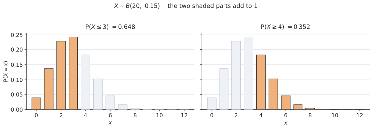
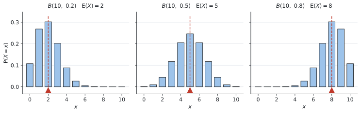

SL 4.8 — The binomial distribution（二項分布）
- binomial distribution（二項分布）が使える場面かどうかを、4つの条件で判定できる。
- \(X \sim B(n, p)\) という書き方の意味が分かり、自分で書ける。
- 電卓の binomPdf と binomCdf を使い分けて確率を出せる。
at most、at least、more than、fewer thanを、\(x\) の範囲に直せる。- 公式集の \(E(X) = np\) と \(\text{Var}(X) = np(1-p)\) を使える。
- \(E(X)\) が問題の中で何を意味するかを説明できる。
SL 4.8 の欄には、次の3つが印刷されています。
\[ X \sim B(n, p) \]
\[ E(X) = np \]
\[ \text{Var}(X) = np(1-p) \]
この3つは配られるので、覚える必要はありません。
そしてここが大事なところなのですが、確率そのものを出す式は、公式集に載っていません。 シラバスにはこう書かれています。
In examinations, binomial probabilities should be found using available technology.
つまり、確率は電卓を使って出します。 電卓の使い方をマスターしましょう。
The idea
この項目は、読んでから電卓を触るのでは身に付きません。TI-Nspire を手元に置いて、出てくる数を1つずつ自分で打ち込みながら読み進めてください。
使うのは次の1か所だけです。
menu → Statistics → Distributionsここに Binomial Pdf と Binomial Cdf があることを、いま確かめておいてください。
1. binomial distribution が使える4つの条件
binomial distribution（二項分布）が扱うのは、次のような場面です。
同じことを \(n\) 回くり返して、うまくいった回数を数える。
ただし、どんな場面でも使えるわけではありません。 シラバスにも “Situations where the binomial distribution is an appropriate model”（二項分布が適切なモデルとなる場面）と書かれています。使ってよいかどうかの判断が、この項目の半分です。
次の4つが全部そろったときだけ使えます。
| # | 条件 | 英語での言い方 |
|---|---|---|
| 1 | 回数 \(n\) が決まっている | a fixed number of trials |
| 2 | 毎回の結果が2つだけ（うまくいく／いかない） | two outcomes: success or failure |
| 3 | うまくいく確率 \(p\) が毎回同じ | the probability \(p\) is constant |
| 4 | 毎回が independent（前の回の結果に影響されない） | the trials are independent |
サイコロを \(20\) 回振って \(6\) が出た回数、\(50\) 個の製品を調べて不良品だった個数、\(15\) 本のシュートを打って入った本数 ── どれも4つを満たします。
without replacement（戻さずに）と書いてあったら、二項分布は使えません。
袋から玉を戻さずに取り出すと、2回目の確率が1回目と変わってしまいます（SL 4.6 でやったとおりです）。条件3の「\(p\) が毎回同じ」が崩れます。
with replacement（戻しながら）なら \(p\) は変わらないので、使えます。
問題文の with と without は、必ず丸で囲んでください。 ここだけで、使える・使えないが決まります。
2. \(X \sim B(n, p)\) という書き方
条件がそろったら、次のように書きます。公式集にもこの形で載っています。
\[ X \sim B(n, p) \tag{1}\]
記号の意味
| 記号 | 読み方・意味 |
|---|---|
| \(\sim\) | 「〜に従う」（distributed as）。イコールではありません |
| \(B\) | Binomial の B |
| \(n\) | くり返す回数 |
| \(p\) | 1回あたりのうまくいく確率 |
たとえば「\(4\) 択の問題 \(12\) 問を、全部あてずっぽうで答える」なら、\(n = 12\)、\(p = \dfrac{1}{4} = 0.25\) なので、
\[ X \sim B(12,\ 0.25) \]
と書きます。\(X\) は「正解した問題数」です（大文字 \(X\) と小文字 \(x\) の使い分けは SL 4.7 のとおりです）。
Write down the distribution of X と聞かれたら、この1行を書くだけで点になります。
3. 電卓のコマンドは2つだけです
確率は電卓で出します。使うのは2つだけです。
| 求めたいもの | 使うコマンド |
|---|---|
| \(P(X = x)\) … ちょうど \(x\) 回 | binomPdf |
| \(P(a \leq X \leq b)\) … 範囲 | binomCdf |
Pdf は棒1本、Cdf は棒のかたまり、と覚えてください。操作の手順は、このページの「Using your GDC」に書いてあります。
ちなみに、Cdf は cumulative（累積）からきています。SL 4.2 の cumulative frequency と同じ「積み上げていく」という意味です。
4. 英語を \(x\) の範囲に直します
この項目で一番点を落とすのは、計算ではなくここです。 英語を読み違えると、電卓に入れる数がずれます。
\(n = 20\) のときを例に、\(5\) を基準にして並べます。
| 英語 | 不等号 | binomCdf に入れる範囲 |
|---|---|---|
exactly 5 |
\(X = 5\) | binomPdf を使う |
at most 5 |
\(X \leq 5\) | \(0\) から \(5\) |
fewer than 5, less than 5 |
\(X < 5\)、つまり \(X \leq 4\) | \(0\) から \(4\) |
at least 5 |
\(X \geq 5\) | \(5\) から \(20\) |
more than 5 |
\(X > 5\)、つまり \(X \geq 6\) | \(6\) から \(20\) |
between 5 and 8 inclusive |
\(5 \leq X \leq 8\) | \(5\) から \(8\) |
at least と more than は違います
at least 5… 「\(5\) 以上」。\(5\) を含みますmore than 5… 「\(5\) より多い」。\(5\) を含みません
同じように at most 5（\(5\) 以下、\(5\) を含む） と fewer than 5（\(5\) 未満、\(5\) を含まない） も違います。
\(X\) は回数なので整数しかとりません。だから \(X < 5\) は \(X \leq 4\) と同じです。この読みかえができると、binomCdf の上限・下限に迷わなくなります。
残りどうしの関係も使えます
\(P(X \leq 3)\) と \(P(X \geq 4)\) は、足すと \(1\) になります。あいだに抜けている整数がないからです。

図 1 は \(X \sim B(20,\ 0.15)\) の様子です。オレンジの棒を全部足すと、左が \(0.648\)、右が \(0.352\) で、合わせて \(1\) になります。
\[ P(X \geq 4) = 1 - P(X \leq 3) \tag{2}\]
SL 4.5 の complementary events と同じ考え方です。TI-Nspire では binomCdf に上限 \(n\) を入れれば直接出せるので、この式を使わなくても解けます。 ただし「\(P(X \geq 4)\) を \(1 - P(X \leq 4)\) にしてしまう」間違いが多いので、引くなら \(3\) までだと覚えておいてください。
5. \(E(X) = np\) と \(\text{Var}(X)\)
期待値は、公式集の1行で出ます。
\[ E(X) = np \tag{3}\]
\(20\) 回のうち \(1\) 回あたり \(0.15\) の確率で起きるなら、\(20 \times 0.15 = 3\) 回。感覚どおりの答えになります。
分散（variance）も公式集にあります。
\[ \text{Var}(X) = np(1-p) \tag{4}\]
標準偏差（standard deviation）が聞かれたら、\(\text{Var}(X)\) の平方根をとります。
\[ \sigma = \sqrt{np(1-p)} \tag{5}\]
公式集にあるのは \(\text{Var}(X) = np(1-p)\) までです。「標準偏差は分散の平方根」という関係（SL 4.3）は、自分で覚えておく必要があります。
まず \(\text{Var}(X)\) を出して、それから平方根をとる、という2段階でやれば確実です。
\(p\) が変わると形が変わります

図 2 は \(n = 10\) のまま \(p\) だけを変えたものです。赤い印が \(E(X) = np\) の位置です。
- \(p\) が小さいと左に寄ります（\(p = 0.2\) なら \(E(X) = 2\)）
- \(p = 0.5\) のときだけ左右対称になります
- \(p\) が大きいと右に寄ります（\(p = 0.8\) なら \(E(X) = 8\)）
\(E(X) = np\) は、山のだいたい真ん中です。答えを出したあと、\(np\) とかけ離れていないかを見れば、打ち間違いに気づけます。
Why it works
ここでは、なぜ \(E(X) = np\) になるのかだけを説明します。
\(1\) 回だけやる場合を考えます。うまくいけば \(1\) 回、いかなければ \(0\) 回と数えるので、SL 4.7 の \(E(X)\) の式に入れると、
\[ E(X) = 1 \times p + 0 \times (1-p) = p \]
\(1\) 回あたりの期待値は \(p\) です。
それを \(n\) 回くり返すのですから、全部合わせると \(p\) が \(n\) 個ぶんで、
\[ E(X) = \underbrace{p + p + \cdots + p}_{n \text{ 個}} = np \]
これが 式 3 です。SL 4.5 の「期待される回数 \(= n \times P(A)\)」と、まったく同じ式でもあります。シラバスにも “Link to: expected number of occurrences (SL4.5)” と書かれています。
確率そのものは、次の式から出ています。
\[ P(X = x) = \binom{n}{x} p^{x} (1-p)^{\,n-x} \]
この式は AI SL の公式集に載っていませんし、試験で使う必要もありません。 シラバスが「電卓で求めること」と指定しているからです。
意味だけ書いておくと、\(p^{x}\) は「うまくいった \(x\) 回ぶん」、\((1-p)^{\,n-x}\) は「いかなかった残りぶん」、\(\binom{n}{x}\) は「どの回にうまくいくかの選び方の数」です。電卓の binomPdf は、これを計算しています。
分散 \(np(1-p)\) の証明も、シラバスに “Not required: Formal proof of mean and variance” と明記されています。出ません。
Worked examples
問題文は英語です。意味が理解できなかったら、問題文の下の「日本語訳」を開いてください。解説は日本語です。
例題 1 A quiz has \(12\) multiple-choice questions. Each question has \(4\) options, exactly one of which is correct. A student guesses the answer to every question. Let \(X\) be the number of questions the student answers correctly.
(a) Write down the distribution of \(X\).
(b) Find \(P(X = 3)\).
(c) Find \(E(X)\).
日本語訳
\(12\) 問の4択問題のテストがあります。各問題には \(4\) つの選択肢があり、正解はちょうど \(1\) つです。ある生徒が全問をあてずっぽうで答えます。\(X\) をその生徒が正解した問題数とします。
(a) \(X\) の分布を書きなさい。
(b) \(P(X = 3)\) を求めなさい。
(c) \(E(X)\) を求めなさい。
(a) まず4つの条件を確かめます。問題数 \(12\) は決まっている、各問は正解か不正解の2つだけ、あてずっぽうなので確率はどの問も \(\dfrac{1}{4}\) で同じ、1問の結果が次の問に影響しない。4つとも満たしています。
\(n = 12\)、\(p = \dfrac{1}{4} = 0.25\) なので、
\[ X \sim B(12,\ 0.25) \]
Write down なので、この1行で終わりです。 計算はいりません。
(b) 「ちょうど \(3\) 問」なので binomPdf です（表 3）。
binomPdf(12, 0.25, 3)\[ P(X = 3) = 0.258 \quad (3 \text{ s.f.}) \]
(c) 公式集の \(E(X) = np\) です。
\[ E(X) = 12 \times 0.25 = 3 \]
あてずっぽうで \(12\) 問やると、平均 \(3\) 問正解する、という意味です。(b) で「ちょうど \(3\) 問」を聞かれているのは、そこが山の真ん中だからです。
(a) \(X \sim B(12,\ 0.25)\)
(b) \(P(X = 3) = 0.258\) (3 s.f.)
(c) \(E(X) = np = 12 \times 0.25 = 3\)
例題 2 A machine produces components. On average \(8\%\) of the components are defective. A random sample of \(20\) components is taken. Let \(X\) be the number of defective components in the sample.
(a) Find \(P(X = 2)\).
(b) Find the probability that at most \(2\) components are defective.
(c) Find the probability that at least \(3\) components are defective.
日本語訳
ある機械が部品を作っています。平均して \(8\%\) が不良品です。\(20\) 個の部品を無作為に取り出します。\(X\) をその中の不良品の個数とします。
(a) \(P(X = 2)\) を求めなさい。
(b) 不良品が \(2\) 個以下である確率を求めなさい。
(c) 不良品が \(3\) 個以上である確率を求めなさい。
（at most は「〜以下」、at least は「〜以上」です。）
\(8\%\) なので \(p = 0.08\)、\(n = 20\) です。
\[ X \sim B(20,\ 0.08) \]
(a) 「ちょうど \(2\) 個」なので binomPdf。
binomPdf(20, 0.08, 2)\[ P(X = 2) = 0.271 \quad (3 \text{ s.f.}) \]
(b) at most 2 は \(X \leq 2\)、つまり \(0, 1, 2\) です（表 4）。範囲なので binomCdf、下限は \(0\) です。
binomCdf(20, 0.08, 0, 2)\[ P(X \leq 2) = 0.788 \quad (3 \text{ s.f.}) \]
(c) at least 3 は \(X \geq 3\)。上限は \(n = 20\) です。
binomCdf(20, 0.08, 3, 20)\[ P(X \geq 3) = 0.212 \quad (3 \text{ s.f.}) \]
検算。 (b) と (c) は残りどうしなので、足すと \(1\) になるはずです。
\[ 0.788 + 0.212 = 1.000 \quad \checkmark \]
このように確かめられる形の設問は多いので、時間があれば必ずやってください。
\(X \sim B(20,\ 0.08)\)
(a) \(P(X = 2) = 0.271\) (3 s.f.)
(b) \(P(X \leq 2) = 0.788\) (3 s.f.)
(c) \(P(X \geq 3) = 0.212\) (3 s.f.)
例題 3 A seed supplier states that \(60\%\) of its seeds germinate. A gardener plants \(50\) of these seeds. Let \(X\) be the number of seeds that germinate.
(a) Find \(E(X)\).
(b) Find \(\text{Var}(X)\).
(c) Find the standard deviation of \(X\), correct to three significant figures.
日本語訳
ある種苗店は、自社の種の \(60\%\) が発芽すると言っています。ある人がこの種を \(50\) 粒まきます。\(X\) を発芽した種の数とします。
(a) \(E(X)\) を求めなさい。
(b) \(\text{Var}(X)\) を求めなさい。
(c) \(X\) の標準偏差を有効数字3桁で求めなさい。
（germinate は「発芽する」です。）
\(n = 50\)、\(p = 0.6\) です。
\[ X \sim B(50,\ 0.6) \]
(a) 公式集の \(E(X) = np\)。
\[ E(X) = 50 \times 0.6 = 30 \]
(b) 公式集の \(\text{Var}(X) = np(1-p)\)。\(1 - p = 0.4\) をまず出しておくと、打ち間違いが減ります。
\[ \text{Var}(X) = 50 \times 0.6 \times 0.4 = 12 \]
(c) 標準偏差は分散の平方根です。この関係は公式集にありません。
\[ \sigma = \sqrt{12} = 3.4641\ldots = 3.46 \quad (3 \text{ s.f.}) \]
\(30\) の前後 \(3.46\) くらい、つまりだいたい \(27\) 〜 \(33\) 粒あたりに集まる、ということです。\(50\) 粒まいて \(30\) 粒前後、と考えれば感覚に合います。
\(X \sim B(50,\ 0.6)\)
(a) \(E(X) = np = 50 \times 0.6 = 30\)
(b) \(\text{Var}(X) = np(1-p) = 50 \times 0.6 \times 0.4 = 12\)
(c) \(\sigma = \sqrt{12} = 3.46\) (3 s.f.)
例題 4 A basketball player succeeds with \(70\%\) of her free throws. She takes \(15\) free throws. Let \(X\) be the number of successful throws.
(a) Find \(P(X = 12)\).
(b) Find the probability that she scores between \(10\) and \(13\) throws inclusive.
(c) Find \(E(X)\) and interpret this value in context.
日本語訳
あるバスケットボール選手は、フリースローの \(70\%\) を成功させます。この選手が \(15\) 本のフリースローを打ちます。\(X\) を成功した本数とします。
(a) \(P(X = 12)\) を求めなさい。
(b) 成功が \(10\) 本以上 \(13\) 本以下である確率を求めなさい。
(c) \(E(X)\) を求め、その値の意味を問題の文脈で説明しなさい。
（between 10 and 13 inclusive は「\(10\) 以上 \(13\) 以下」、つまり両端を含みます。）
\[ X \sim B(15,\ 0.7) \]
(a) 「ちょうど \(12\) 本」なので binomPdf。
binomPdf(15, 0.7, 12)\[ P(X = 12) = 0.170 \quad (3 \text{ s.f.}) \]
(b) between 10 and 13 inclusive は \(10 \leq X \leq 13\) です。inclusive があるので両端を含みます（表 4）。範囲なので binomCdf、下限 \(10\)・上限 \(13\)。
binomCdf(15, 0.7, 10, 13)\[ P(10 \leq X \leq 13) = 0.686 \quad (3 \text{ s.f.}) \]
(c) \(E(X) = 15 \times 0.7 = 10.5\) です。
Interpret が付いているので、数字だけでは点になりません。 言葉で1文書きます。
試験ではこう書く
On average, the player scores \(10.5\) out of \(15\) free throws, in the long run.
（意味：この選手は長い目で見て、\(15\) 本のうち平均 \(10.5\) 本を決める。）
\(10.5\) 本というシュートは存在しませんが、丸めないでください。SL 4.7 でやったとおり、期待値は実際には出ない値でも構いません。
\(X \sim B(15,\ 0.7)\)
(a) \(P(X = 12) = 0.170\) (3 s.f.)
(b) \(P(10 \leq X \leq 13) = 0.686\) (3 s.f.)
(c) \(E(X) = np = 15 \times 0.7 = 10.5\)
On average, the player scores \(10.5\) out of \(15\) free throws, in the long run.
例題 5 A bag contains \(20\) counters, of which \(6\) are red. Five counters are taken from the bag without replacement. Let \(X\) be the number of red counters taken.
(a) Explain why \(X\) cannot be modelled by a binomial distribution.
The five counters are now taken with replacement instead.
(b) Write down the distribution of \(X\).
(c) Find \(P(X = 2)\).
日本語訳
袋に \(20\) 個のカウンターが入っていて、そのうち \(6\) 個が赤です。戻さずに \(5\) 個取り出します。\(X\) を取り出した赤の個数とします。
(a) \(X\) が二項分布ではモデル化できない理由を説明しなさい。
いま、\(5\) 個を戻しながら取り出すことにします。
(b) \(X\) の分布を書きなさい。
(c) \(P(X = 2)\) を求めなさい。
(a) Explain why なので、言葉で答える設問です。計算はいりません。
条件3（\(p\) が毎回同じ）が崩れています。戻さないと、2回目の袋の中身が変わるからです。
\(1\) 回目に赤を引く確率は \(\dfrac{6}{20} = 0.3\) ですが、赤を引いたあとの \(2\) 回目は \(\dfrac{5}{19}\) になります。毎回同じ \(p\) ではありません。
試験ではこう書く
Because the counters are taken without replacement, the probability of taking a red counter changes at each draw. The trials are not independent and \(p\) is not constant, so the binomial model does not apply.
（意味：戻さずに取り出すので、赤を引く確率が毎回変わってしまう。試行が独立でなく \(p\) も一定でないので、二項分布は使えない。）
(b) 戻すなら、袋の中身はいつも \(20\) 個のまま、赤も \(6\) 個のままです。毎回 \(p = \dfrac{6}{20} = 0.3\) になります。
\[ X \sim B(5,\ 0.3) \]
(c) 「ちょうど \(2\) 個」なので binomPdf。
binomPdf(5, 0.3, 2)\[ P(X = 2) = 0.309 \quad (3 \text{ s.f.}) \]
(a) Because the counters are taken without replacement, the probability of taking a red counter changes at each draw, so \(p\) is not constant. The binomial model does not apply.
(b) \(X \sim B(5,\ 0.3)\)
(c) \(P(X = 2) = 0.309\) (3 s.f.)
Common errors
at least と more than を同じだと思う
この項目で一番多い間違いです。
at least 4… \(X \geq 4\)。\(4\) を含むmore than 4… \(X > 4\)、つまり \(X \geq 5\)。\(4\) を含まない
at most と fewer than も同じ関係です。問題文の英語に線を引いてから、電卓に入れる数を決めてください。
引くなら \(P(X \leq 3)\) です。
\[ P(X \geq 4) = 1 - P(X \leq 3) \]
\(x = 4\) を2回数えてしまうのがこの間違いです。TI-Nspire なら binomCdf(n, p, 4, n) で直接出せるので、そもそも引き算をしないほうが安全です。
without replacement なのに二項分布を使う
戻さない場合は \(p\) が毎回変わるので、使えません（SL 4.6 の樹形図で解きます）。
問題文に with と without のどちらが書いてあるかを、必ず確かめてください。
exactly（ちょうど） … binomPdf- 範囲（以上・以下・〜から〜まで） … binomCdf
範囲なのに Pdf を使うと、棒 \(1\) 本ぶんしか出ません。答えが小さすぎたら、まずここを疑ってください。
at most 5 なら 下限は \(0\)、at least 5 なら 上限は \(n\) です。
4つの欄が全部埋まっているかを確かめてから OK を押してください。
\(8\%\) なら \(p = 0.08\) です。\(8\) ではありません。
\(p\) は必ず \(0\) 以上 \(1\) 以下です。\(1\) より大きい数を入れた時点で間違いです。
\(E(X) = 10.5\) は「長い目で見た平均」です。\(15\) 本打って必ず \(10.5\) 本入る、という意味ではありません。
Interpret が付いていたら、on average、in the long run を必ず入れてください。
公式集にあるのは \(\text{Var}(X) = np(1-p)\) までです。
standard deviation と書かれていたら、そのあとに平方根が必要です。
Using your GDC (TI-Nspire CX II)
シラバスが「確率は technology で求めること」と指定しています。ここの操作を覚えれば、この項目の計算はすべて出せます。
使うのはこの1か所だけです
menu → Statistics → Distributionsここに次の2つがあります。
| コマンド | いつ使うか |
|---|---|
| Binomial Pdf | \(P(X = x)\) … ちょうど \(x\) 回 |
| Binomial Cdf | \(P(a \leq X \leq b)\) … 範囲 |
Binomial Pdf ── ちょうど \(x\) 回
出てくる欄は3つです。
Num Trials, n… 回数 \(n\)Prob Success, p… 確率 \(p\)（小数で）X Value… 求めたい \(x\)
例 1 なら \(12\)、\(0.25\)、\(3\) と入れて、\(0.258\) が出ます。
Binomial Cdf ── 範囲
出てくる欄は4つです。下2つを埋め忘れないでください。
Num Trials, nProb Success, pLower Bound… 範囲の下Upper Bound… 範囲の上
表 4 のとおりに直すと、次のようになります。
| 求めたいもの | Lower | Upper |
|---|---|---|
| \(P(X \leq 5)\)（at most 5） | \(0\) | \(5\) |
| \(P(X < 5)\)（fewer than 5） | \(0\) | \(4\) |
| \(P(X \geq 5)\)（at least 5） | \(5\) | \(n\) |
| \(P(X > 5)\)（more than 5） | \(6\) | \(n\) |
| \(P(5 \leq X \leq 8)\) | \(5\) | \(8\) |
「以上」なら Upper に \(n\)、「以下」なら Lower に \(0\)。 ここだけ覚えておけば迷いません。
直接打ち込むこともできます
計算ページで、次のように書いても同じ結果になります。
binomPdf(20, 0.08, 2)
binomCdf(20, 0.08, 0, 2)メニューから選んだほうが、欄の名前が出るぶん安全です。慣れるまではメニューを使ってください。
出た答えを \(np\) で見直す
答えが出たら、\(E(X) = np\) と見くらべてください（図 2）。
\(n = 20\)、\(p = 0.08\) なら \(np = 1.6\) です。\(1\) 個や \(2\) 個あたりの確率が大きく、\(10\) 個の確率はほぼ \(0\) になるはずです。ここから大きく外れていたら、\(n\) と \(p\) を入れ違えているか、パーセントのまま入れています。
表にして全部見る（余裕があれば）
Lists & Spreadsheet で、\(A\) 列に \(0, 1, 2, \ldots, n\) を入れ、\(B\) 列の見出しの下に
= binomPdf(20, 0.08, a[])と入れると、すべての \(x\) についての確率が一度に並びます。 図 2 のような形が自分の電卓で見えるので、一度やっておくと分布のイメージがつかめます。
Exercises
各問題に、折りたたみが3つ付いています。日本語訳、解答例（答案用紙に書くべきこと。英語です）、解説（なぜそうなるか。日本語です）。
まず自分で解いて、次に解答例と見くらべてください。解説は、合わなかったときだけ開けば十分です。
1 The random variable \(X\) follows the distribution \(X \sim B(10,\ 0.4)\).
(a) Find \(P(X = 4)\).
(b) Find \(P(X \leq 4)\).
(c) Find \(E(X)\).
日本語訳
確率変数 \(X\) は \(X \sim B(10,\ 0.4)\) に従います。
(a) \(P(X = 4)\) を求めなさい。
(b) \(P(X \leq 4)\) を求めなさい。
(c) \(E(X)\) を求めなさい。
(a) \(P(X = 4) = 0.251\) (3 s.f.)
(b) \(P(X \leq 4) = 0.633\) (3 s.f.)
(c) \(E(X) = np = 10 \times 0.4 = 4\)
(a) 「ちょうど \(4\)」なので binomPdf。binomPdf(10, 0.4, 4)。
(b) 範囲なので binomCdf。\(X \leq 4\) の下限は \(0\) です。binomCdf(10, 0.4, 0, 4)。
(c) \(E(X) = np = 4\)。
(a) と (b) を見くらべてください。 \(P(X \leq 4) = 0.633\) の中に \(P(X = 4) = 0.251\) が含まれています。Cdf のほうが必ず大きくなります。 逆になっていたら、どちらかを取り違えています。
2 In a large batch of light bulbs, \(5\%\) are faulty. A random sample of \(30\) bulbs is taken. Let \(X\) be the number of faulty bulbs in the sample.
(a) Find \(P(X = 0)\).
(b) Find the probability that at least one bulb is faulty.
日本語訳
大量の電球のうち \(5\%\) が不良品です。\(30\) 個を無作為に取り出します。\(X\) をその中の不良品の個数とします。
(a) \(P(X = 0)\) を求めなさい。
(b) 少なくとも \(1\) 個が不良品である確率を求めなさい。
\(X \sim B(30,\ 0.05)\)
(a) \(P(X = 0) = 0.215\) (3 s.f.)
(b) \(P(X \geq 1) = 1 - P(X = 0) = 1 - 0.215 = 0.785\) (3 s.f.)
\(5\%\) なので \(p = 0.05\)。\(5\) ではありません。
(a) binomPdf(30, 0.05, 0)。
(b) at least one は \(X \geq 1\) です。\(X\) は整数なので、\(X \geq 1\) の反対は \(X = 0\) だけになります。
\[P(X \geq 1) = 1 - P(X = 0)\]
binomCdf(30, 0.05, 1, 30) でも同じ \(0.785\) が出ます。どちらでも構いません。
at least one（少なくとも1つ）はとてもよく出る言い方です。見たら「\(1\) から引く」と反応できるようにしておいてください。
3 The random variable \(X\) follows the distribution \(X \sim B(60,\ 0.35)\).
(a) Find \(E(X)\).
(b) Find \(\text{Var}(X)\).
(c) Find the standard deviation of \(X\), correct to three significant figures.
日本語訳
確率変数 \(X\) は \(X \sim B(60,\ 0.35)\) に従います。
(a) \(E(X)\) を求めなさい。
(b) \(\text{Var}(X)\) を求めなさい。
(c) \(X\) の標準偏差を有効数字3桁で求めなさい。
(a) \(E(X) = np = 60 \times 0.35 = 21\)
(b) \(\text{Var}(X) = np(1-p) = 60 \times 0.35 \times 0.65 = 13.65\)
(c) \(\sigma = \sqrt{13.65} = 3.69\) (3 s.f.)
どちらも公式集に載っています。 代入するだけです。
(b) \(1 - p = 1 - 0.35 = 0.65\)。先にこれを出しておくと、\(0.35\) を2回かけるような間違いが防げます。
(c) 標準偏差は分散の平方根。この関係だけは公式集にありません。
\[\sqrt{13.65} = 3.6945\ldots\]
有効数字3桁で \(3.69\) です。\(13.65\) をそのまま答えないでください。
4 The random variable \(X\) follows the distribution \(X \sim B(n,\ 0.2)\), and \(E(X) = 9\).
(a) Find the value of \(n\).
(b) Find \(\text{Var}(X)\).
日本語訳
確率変数 \(X\) は \(X \sim B(n,\ 0.2)\) に従い、\(E(X) = 9\) です。
(a) \(n\) の値を求めなさい。
(b) \(\text{Var}(X)\) を求めなさい。
(a) \(np = 9\)
\[0.2n = 9\]
\[n = 45\]
(b) \(\text{Var}(X) = np(1-p) = 45 \times 0.2 \times 0.8 = 7.2\)
逆向きに使う問題です。\(E(X) = np\) の \(n\) が分からないので、方程式にします。
\[n \times 0.2 = 9 \quad \Rightarrow \quad n = \frac{9}{0.2} = 45\]
(b) (a) で \(n = 45\) が出たので、代入するだけです。\(1 - p = 0.8\)。
\[45 \times 0.2 \times 0.8 = 7.2\]
\(n\) は回数なので、必ず整数になります。 整数にならなかったら (a) の計算が間違っています。
5 The random variable \(X\) follows the distribution \(X \sim B(20,\ 0.15)\).
(a) Find \(P(X \geq 4)\).
(b) Find \(P(X > 4)\).
(c) Explain why your answers to (a) and (b) are different.
日本語訳
確率変数 \(X\) は \(X \sim B(20,\ 0.15)\) に従います。
(a) \(P(X \geq 4)\) を求めなさい。
(b) \(P(X > 4)\) を求めなさい。
(c) (a) と (b) の答えが違う理由を説明しなさい。
(a) \(P(X \geq 4) = 0.352\) (3 s.f.)
(b) \(P(X > 4) = 0.170\) (3 s.f.)
(c) \(P(X \geq 4)\) includes \(x = 4\), while \(P(X > 4)\) does not. The difference between the two answers is \(P(X = 4) = 0.182\).
(a) \(X \geq 4\) なので Lower \(= 4\)、Upper \(= 20\)。binomCdf(20, 0.15, 4, 20)。
(b) \(X > 4\) は \(X \geq 5\) です（\(X\) は整数）。Lower \(= 5\)。binomCdf(20, 0.15, 5, 20)。
(c) 違いは \(x = 4\) の棒1本ぶんだけです。
\[0.352 - 0.170 = 0.182 = P(X = 4)\]
binomPdf(20, 0.15, 4) で確かめられます。
この棒1本の差が、そのまま点差になります。 at least と more than を読み分けてください。
6 The random variable \(X\) follows the distribution \(X \sim B(25,\ 0.6)\).
(a) Find the probability that \(X\) is between \(12\) and \(18\) inclusive.
(b) Find \(E(X)\).
日本語訳
確率変数 \(X\) は \(X \sim B(25,\ 0.6)\) に従います。
(a) \(X\) が \(12\) 以上 \(18\) 以下である確率を求めなさい。
(b) \(E(X)\) を求めなさい。
(a) \(P(12 \leq X \leq 18) = 0.849\) (3 s.f.)
(b) \(E(X) = np = 25 \times 0.6 = 15\)
(a) inclusive があるので両端を含みます。 Lower \(= 12\)、Upper \(= 18\) をそのまま入れます。
binomCdf(25, 0.6, 12, 18)inclusive がなければ \(13 \leq X \leq 17\) になるところでした。この1語で答えが変わります。
(b) \(E(X) = 15\)。
\(15\) は \(12\) と \(18\) のちょうど真ん中あたりです。山の中心を含む広い範囲なので、確率が \(0.849\) と大きくなるのは自然です。答えが \(0.1\) のような小さい値になったら、範囲を入れ間違えています。
7 Each morning a commuter records whether her train is late. Over a period of \(20\) days, let \(X\) be the number of days on which the train is late.
(a) State two assumptions needed for \(X\) to be modelled by a binomial distribution.
(b) Explain why one of these assumptions may not hold in practice.
日本語訳
ある通勤者が、毎朝、電車が遅れたかどうかを記録します。\(20\) 日間について、\(X\) を電車が遅れた日数とします。
(a) \(X\) を二項分布でモデル化するために必要な仮定を \(2\) つ述べなさい。
(b) そのうちの \(1\) つが、実際には成り立たないかもしれない理由を説明しなさい。
（assumption は「仮定」です。）
(a) (1) The probability that the train is late is the same on every day. (2) Whether the train is late on one day is independent of whether it is late on any other day.
(b) Whether the train is late is unlikely to be independent from day to day. For example, bad weather or a signal fault may cause the train to be late on several consecutive days, so one late day makes the next more likely.
計算のない設問ですが、シラバスに “Situations where the binomial distribution is an appropriate model” とある以上、出うる形です。
(a) 4つの条件のうち、\(p\) が一定 と independent の \(2\) つを書けば十分です。
- 「\(20\) 日と決まっている」（条件1）と「遅れる／遅れないの2つだけ」（条件2）は、問題文からすでに決まっていることです。仮定ではありません
- 聞かれているのは、確かめようがないので仮定するしかない部分です
(b) independent のほうが崩れやすいです。悪天候や信号故障は何日も続くので、「昨日遅れたなら今日も遅れやすい」という関係が生まれます。
具体例を1つ挙げてください。 「独立でないかもしれない」だけでは弱く、for example から先が点になります。
8 An online shop finds that \(3\%\) of the items it sells are returned by the customer. In one month the shop sells \(200\) items. Let \(X\) be the number of items that are returned.
(a) Find the expected number of items returned in the month.
(b) Find \(P(X \leq 5)\).
日本語訳
あるオンラインショップでは、売れた商品の \(3\%\) が客から返品されます。ある月に、この店は \(200\) 個の商品を売りました。\(X\) を返品された商品の個数とします。
(a) その月に返品されると期待される商品の個数を求めなさい。
(b) \(P(X \leq 5)\) を求めなさい。
\(X \sim B(200,\ 0.03)\)
(a) \(E(X) = np = 200 \times 0.03 = 6\)
(b) \(P(X \leq 5) = 0.443\) (3 s.f.)
(a) expected number と書かれていますが、やることは \(E(X) = np\) です。
SL 4.5 の「期待される回数 \(= n \times P(A)\)」とまったく同じ式です。シラバスにも SL 4.5 へのリンクが書かれています。別の公式ではありません。
(b) binomCdf(200, 0.03, 0, 5)。\(n\) が \(200\) と大きくても、電卓の入れ方は同じです。
\(E(X) = 6\) なので、「\(5\) 個以下」は平均よりやや少ないほうです。だいたい半分弱、つまり \(0.4\) 〜 \(0.5\) くらいになるはずで、\(0.443\) はその範囲に入っています。答えの見当をつけてから電卓を打つと、打ち間違いに気づけます。
9 The random variable \(X\) follows the distribution \(X \sim B(40,\ 0.25)\). A student calculates \(E(X) = 10\) and then states: “So exactly \(10\) of the \(40\) trials will be successful.”
(a) Explain why the student’s statement is not correct.
(b) Find the standard deviation of \(X\), correct to three significant figures.
日本語訳
確率変数 \(X\) は \(X \sim B(40,\ 0.25)\) に従います。ある生徒が \(E(X) = 10\) を計算し、「だから \(40\) 回のうちちょうど \(10\) 回が成功する」と言いました。
(a) この生徒の主張が正しくない理由を説明しなさい。
(b) \(X\) の標準偏差を有効数字3桁で求めなさい。
（本書オリジナルの問題です。）
(a) \(E(X)\) is the mean number of successes in the long run, not the number that must occur. \(X\) can take any value from \(0\) to \(40\), so the actual number of successes will vary from one set of \(40\) trials to another.
(b) \(\text{Var}(X) = 40 \times 0.25 \times 0.75 = 7.5\)
\[\sigma = \sqrt{7.5} = 2.74 \text{ (3 s.f.)}\]
(a) \(E(X)\) は平均であって、必ず起きる回数ではありません（SL 4.7 で見たとおりです）。
\(X\) は \(0\) から \(40\) までのどの値もとりえます。\(40\) 回やるたびに \(9\) 回だったり \(12\) 回だったりします。\(10\) 回になるとはかぎりません。
on average や in the long run を入れて書いてください。
(b) \(\text{Var}(X) = np(1-p) = 40 \times 0.25 \times 0.75 = 7.5\)。
\[\sigma = \sqrt{7.5} = 2.7386\ldots = 2.74\]
(a) と (b) はつながっています。 標準偏差 \(2.74\) は「\(10\) 回のまわりに、だいたい \(2.7\) くらいずつばらつく」という意味です。この数字が、(a) の「ばらつく」を裏づけています。
10 In a certain town, \(45\%\) of households own a cat. A researcher selects \(8\) households at random. Let \(X\) be the number of these households that own a cat.
(a) Write down the distribution of \(X\).
(b) Find \(P(X = 4)\).
(c) Find the probability that at least \(5\) of the households own a cat.
(d) Find \(E(X)\) and interpret this value in context.
日本語訳
ある町では、世帯の \(45\%\) が猫を飼っています。ある研究者が \(8\) 世帯を無作為に選びます。\(X\) をそのうち猫を飼っている世帯数とします。
(a) \(X\) の分布を書きなさい。
(b) \(P(X = 4)\) を求めなさい。
(c) 少なくとも \(5\) 世帯が猫を飼っている確率を求めなさい。
(d) \(E(X)\) を求め、その値の意味を問題の文脈で説明しなさい。
（household は「世帯」です。）
(a) \(X \sim B(8,\ 0.45)\)
(b) \(P(X = 4) = 0.263\) (3 s.f.)
(c) \(P(X \geq 5) = 0.260\) (3 s.f.)
(d) \(E(X) = np = 8 \times 0.45 = 3.6\)
On average, \(3.6\) of every \(8\) households selected in this way own a cat.
(a) \(45\%\) なので \(p = 0.45\)、\(n = 8\)。
(b) 「ちょうど \(4\)」なので binomPdf。binomPdf(8, 0.45, 4)。
(c) at least 5 は \(X \geq 5\)。Lower \(= 5\)、Upper \(= 8\)（\(n\) です）。
binomCdf(8, 0.45, 5, 8)Upper に \(8\) を入れ忘れないでください。
(d) \(E(X) = 3.6\)。Interpret があるので、言葉で1文必要です。
\(3.6\) 世帯という世帯はありませんが、丸めないでください（SL 4.7）。「\(8\) 世帯選ぶことを何度もくり返したときの平均」だからです。
(b) と (c) の見当。 \(E(X) = 3.6\) なので、山の中心は \(3\) と \(4\) のあたりです。だから \(P(X = 4)\) は大きめ、\(P(X \geq 5)\) は半分より小さめになるはずで、\(0.263\) と \(0.260\) はどちらもつじつまが合っています。